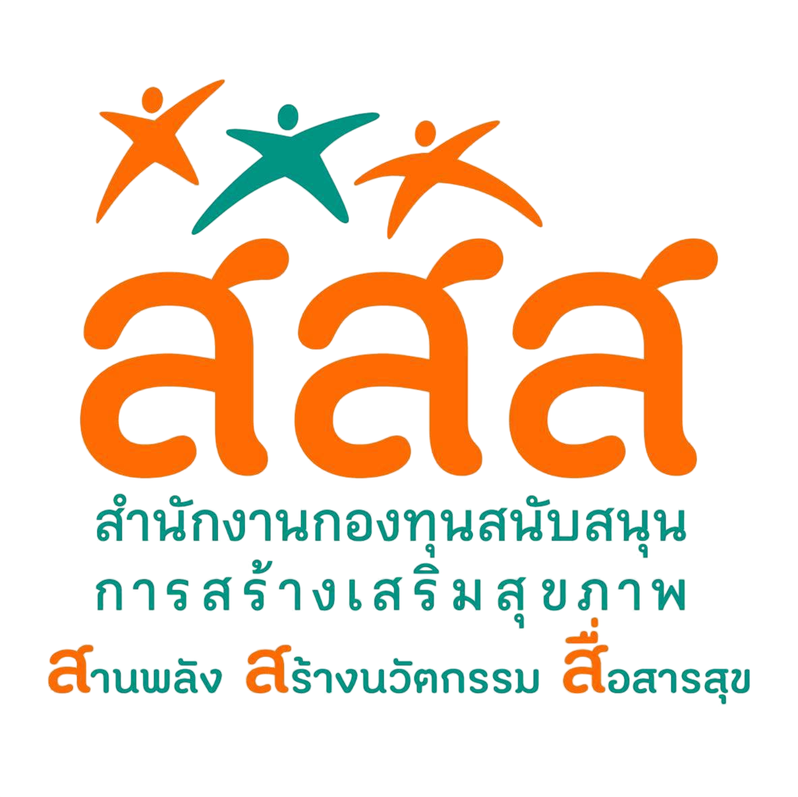
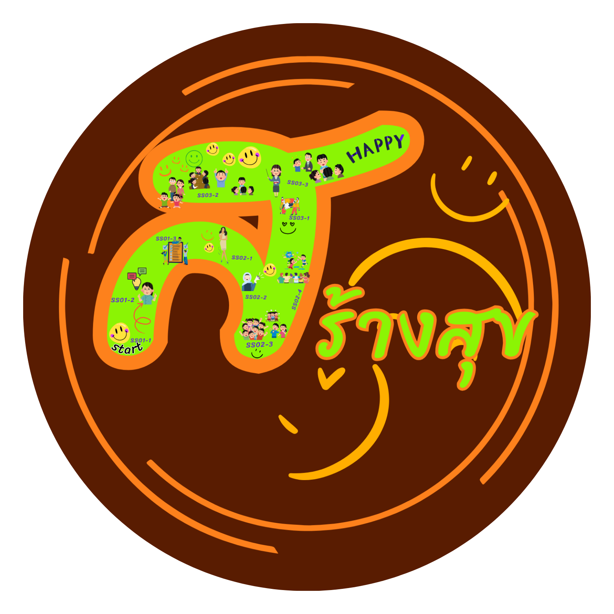

ประชาสัมพันธ์เข้าถึงง่าย
มีหน้าเว็บสาธารณะที่เหมาะสำหรับข่าวกิจกรรม ข้อมูลโครงการ และการค้นหาผ่าน Google
พื้นที่ประชาสัมพันธ์ ข่าวสารกิจกรรม และระบบบริการออนไลน์สำหรับนักสร้างสุข เพื่อบันทึก ติดตาม และขับเคลื่อนงานสุขภาวะชุมชนอย่างเป็นระบบ


ผู้ใช้งานสามารถค้นหาเว็บไซต์จาก Google เพื่ออ่านข้อมูลโครงการและข่าวประชาสัมพันธ์ จากนั้นเข้าสู่ระบบ Google Apps Script เดิมเพื่อส่งและติดตามรายงาน
มีหน้าเว็บสาธารณะที่เหมาะสำหรับข่าวกิจกรรม ข้อมูลโครงการ และการค้นหาผ่าน Google
Login, Google Sheets, Google Drive, Word และประวัติรายงานยังทำงานใน Apps Script เดิม
มี Title, Description, Structured Data, robots.txt และ sitemap.xml สำหรับ Search Engine
เข้าสู่ระบบรายงานเดิมเพื่อกรอกกิจกรรม แนบรูป/เอกสาร และจัดเก็บข้อมูลเข้าสู่ Google Sheets และ Drive
ตรวจสอบรายงานย้อนหลัง สถานะการตรวจ และดาวน์โหลดเอกสารผ่านระบบ Google Apps Script เดิม
พื้นที่สำหรับเชื่อมข่าวจาก Facebook Page ของโครงการและประชาสัมพันธ์กิจกรรมล่าสุด